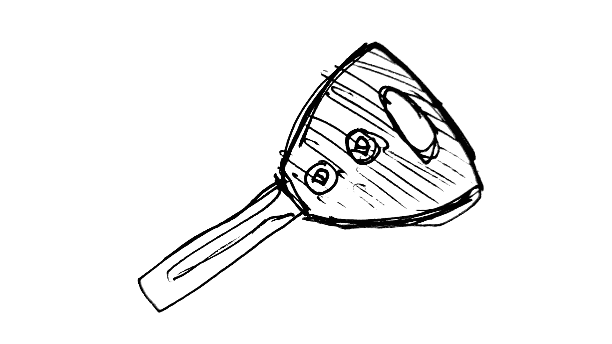

Купили машину
Купили машину.
Сначала думал, что надо будет написать статью про нюансы процесса, но в итоге купили новую, от дилера. А про это писать не вижу смысла, т.к. процесс супер простой и без особых нюансов.
Приходишь, отдаёшь деньги, ждёшь пока они пригонят твою машину (на автовозе) 4-5 недель, потом 15 рабочих дней ждёшь пока дилер оформит собственность, сделает госномер и прикрутит его.
Приходишь, забираешь машину, на месте можно оформить SOAT (перуанский аналог КАСКО).

 Первый "трофей" - ночное небо за городом.
Первый "трофей" - ночное небо за городом.
Хотели посмотреть Персеиды. Это метеоритный дождь, который продлится до 23-24 августа.
Но небо было затянуто облаками и были только небольшие просветы со звёздами. Да и город был недалеко и небо было засвечено.
Но всё равно опыт классный. Тишина, темное небо, влажный запах травы и фырканье пасущихся неподалёку лошадок.
Удивительно, но последний раз что-то подобное было только в Благовещенске. Ни в Краснодаре, ни в Нижнем Новгороде, ни в Москве, ни в Лиме, ни даже в Куско до этого момента не были за городом ночью.